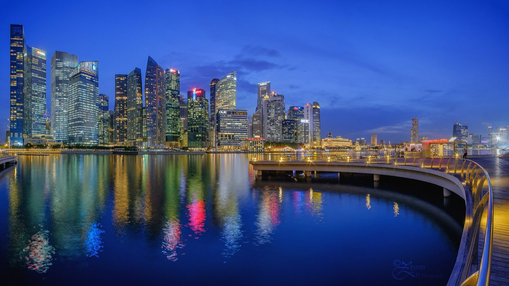
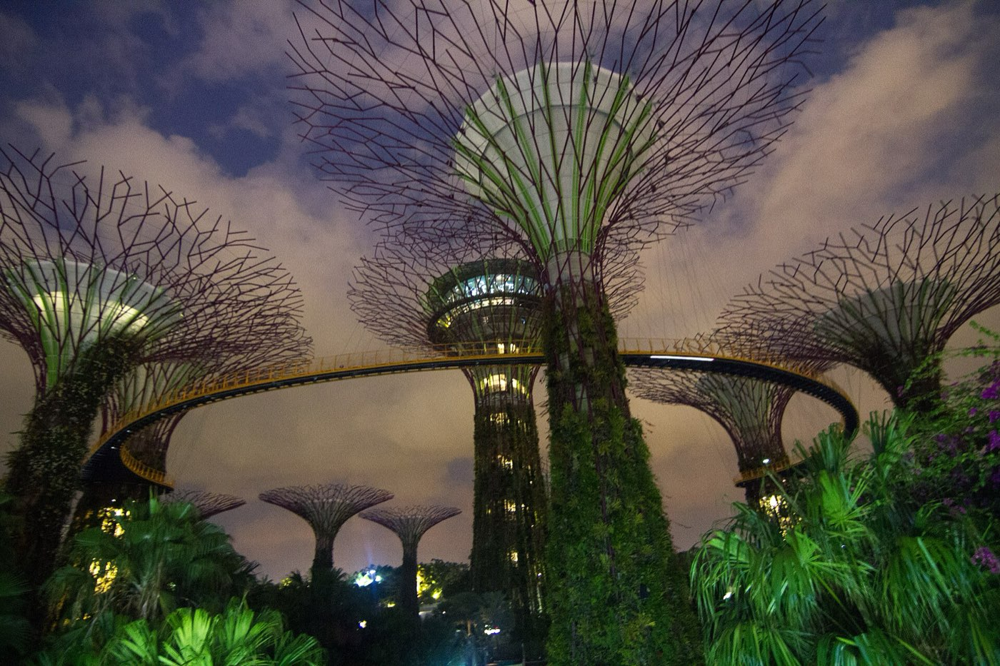
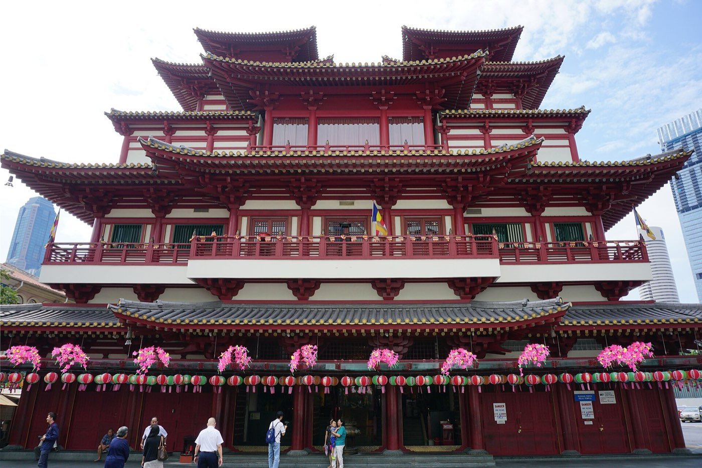

Singapore · 3 days
3 Days in Singapore: What You Actually Have to See
Singapore doesn't have Dubai's problem or Amsterdam's. It's small, and one train network reaches nearly everywhere on one tap, so distance never gates this trip the way it does elsewhere. What does is the climate: this close to the equator, thunderstorms build through the early-to-mid afternoon on a huge share of days, then usually clear by evening. So the plan below keeps the open-air view moments, skyline walks, the Supertree Grove after dark, a Sentosa beach, at the two edges of the day, and lets the volatile middle fall on domes, temples, and malls that don't care what the sky is doing. Here's that shape, plus the three bookings that actually gate a Singapore trip.

Singapore is compact enough, and its transit unified enough, that it breaks the usual rule for a three-day city trip: neighborhoods here are minutes apart on the same MRT network, paid with one tap of a contactless card, so the itinerary below doesn't have to sequence stops around travel time the way a spread-out city does. What it does have to sequence around is the sky. Being roughly 137 kilometers north of the equator means solar heating builds through the day and touches off short, sudden thunderstorms, most likely somewhere between early and mid afternoon, though not on every single day. They usually pass in under an hour, but they're common enough that betting an open-air plan on 2pm is a bad bet more often than not.
So each day below runs outdoor-first, covered-through-the-risk-window, outdoor-again: a waterfront walk or a garden in the morning, a dome, temple interior, or mall through the afternoon, and the skyline or a beach again once the evening settles, which is also when Singapore's best free shows happen anyway. Three things need booking before anything else: Marina Bay Sands' SkyPark, a Universal Studios Singapore day, and the earliest slot you can get into Gardens by the Bay's two domes, all of which run on timed entry that thins out faster than the attractions themselves close.
The storm window sets the schedule, not the distance between neighborhoods. One MRT network reaches almost everywhere in minutes, so this itinerary never plans around travel time. It plans around the early-to-mid-afternoon stretch when a thunderstorm is likeliest, keeping outdoor view moments at the morning and evening edges and letting a dome, a temple hall, or a mall absorb whatever the sky does in between.
Day 1 — Marina Bay in the morning, the domes through the risk window, Supertree Grove after dark
Merlion Park is unticketed and open around the clock, which makes it the easiest possible start: the statue itself is a fifteen-minute stop, but the real reason to go early is the waterfront promenade behind it, with the Downtown Core skyline across the water and the Marina Bay Sands towers to the east, all more comfortable to walk before the mid-morning heat and any storm risk builds. From there it's a short walk or one MRT stop to Gardens by the Bay.
Book the Flower Dome and Cloud Forest for as early a slot as the day allows. Both are open 9am to 9pm with last entry around 8 to 8:30pm, so there's no hard reason to rush them specifically, but they're also the single best use of the early-to-mid-afternoon storm window: fully climate-controlled, indoors in every way that matters, and unaffected by whatever the sky is doing outside. Go through them across the middle of the day rather than trying to slot them in around something else, and the timing problem the rest of the day has to solve mostly disappears.
Once the domes close out the afternoon, walk out to the Supertree Grove for evening. The OCBC Skyway across the tops of the tallest trees is ticketed and stops selling entries before dark, so decide in advance whether that's part of the plan. What isn't ticketed at all is Garden Rhapsody, the free light-and-sound show synced across the Supertrees at 7:45pm and 8:45pm nightly, no booking, no charge, just get to the grove ten to fifteen minutes early for a decent spot. If Marina Bay Sands' Spectra light-and-water show at the Event Plaza fits the same evening, it runs free at 8pm and 9pm most nights (with a 10pm show added Friday and Saturday), a five-to-ten-minute walk from the Supertrees along the bay.
The must-sees
Outdoor at both ends, fully indoors through the storm-prone middle.

Day 2 — Three ethnic districts, one train line apart
This is the day that shows what the unified transit actually buys. Chinatown, Little India, and Kampong Glam are genuinely distinct neighborhoods, different architecture, different food, different everyday rhythm, and yet Little India to Kampong Glam is about 880 meters, a twelve-minute walk or one MRT stop for roughly a dollar. Nothing about this day involves a long transfer or a taxi; it's closer to walking between wards of the same district than crossing a city.
Start in Chinatown before the morning crowds build. The Buddha Tooth Relic Temple is free and open 7am to 7pm, with a genuine dress code enforced at the door, shoulders and knees covered, no sleeveless tops or shorts, sarongs are provided if you turn up without. Pair it with the Sri Mariamman Temple a few streets over and a wander through the shophouse streets before the market stalls get properly busy.
Little India comes next, one or two MRT stops away, and works well through the middle of the day precisely because so much of it is under cover: the Tekka Centre's wet market and food stalls sit under a proper roof, so a passing shower barely registers there. Kampong Glam follows, another short hop, where the Sultan Mosque and the narrow lanes around Haji Lane and Arab Street reward slow walking rather than a checklist. Close the day with hawker food, Maxwell Food Centre near Chinatown or Tekka in Little India both work, and learn the one piece of local etiquette that actually matters: a tissue packet left on a seat, called 'choping' a table, is a real reservation here. Nobody will take a choped seat, and taking one yourself is a fast way to get some very pointed looks.
The must-sees
Three neighborhoods, each two to three hours, none more than one MRT stop from the last.

Day 3 — Sentosa, and why it eats the whole day
Sentosa is the one part of this trip where the geography argument flips: it's close, a free 700-meter boardwalk connects VivoCity to the island in about twelve minutes on foot, but once there, the day belongs to a single choice rather than a sequence of stops. Universal Studios Singapore genuinely needs six to eight hours to do properly, closer to a full day than a morning, so this day works best built around it rather than around fitting it in alongside other things.
Get there via the Sentosa Express monorail from VivoCity's Level 3 (about S$4, including S$2 of Sentosa admission credit, trains every five to eight minutes) if the plan is straight to the park, or the Singapore Cable Car from HarbourFront or Mount Faber if the ride itself is part of the point, it runs roughly 8:45am to 9:30pm and costs more but comes with the kind of aerial view over the harbor and the island that the monorail doesn't. Arrive as close to opening as the ticket allows; the shortest queues tend to cluster around opening and again in the late afternoon, and weekdays run noticeably calmer than weekends.
If the park isn't the plan, Sentosa's beaches, Siloso, Palawan, and Tanjong, are the alternative, and the same storm logic from the rest of the trip still applies: mid-afternoon is the riskiest window to be out on open sand, so treat the beach as a morning or a golden-hour activity rather than a 2pm one. Either way, close the day back on the mainland: Clarke Quay or Boat Quay along the Singapore River run late, are fully open-air, and don't need a ticket.
The must-sees
One big choice, not a checklist. Everything else on Sentosa is secondary to it.
What to book, and how far ahead
| What | Booking window | So |
|---|---|---|
| Universal Studios Singapore | Fixed-date tickets; no walk-up guarantee on weekends | Book once dates are fixed, and go on a weekday if the itinerary allows it |
| Gardens by the Bay — Flower Dome & Cloud Forest | Timed entry, 9am–9pm, last entry 8–8:30pm | Book the earliest slot you can; treat the domes as the afternoon's shelter, not an afterthought |
| Marina Bay Sands SkyPark | Timed entry, non-peak 11am–4:30pm, peak 5–9pm | Book a slot 30 minutes before sunset for both daylight and night views; peak slots sell out first |
| Garden Rhapsody and Spectra light shows | No booking, free | Garden Rhapsody 7:45pm & 8:45pm; Spectra 8pm & 9pm (+10pm Fri–Sat); arrive 10–15 minutes early for a spot |
| Sentosa boardwalk | No booking, free, open 24 hours | The cheapest and most flexible way onto the island |
What three days does not cover
Cutting deliberately beats rushing. These need more time than a three-day trip has:
- Night Safari and the Singapore Zoo — both sit out in Mandai, a separate trip from the city center, and the Night Safari specifically only runs in the evening, which this itinerary has already committed elsewhere each day.
- A full day at Sentosa's water parks — Adventure Cove and the S.E.A. Aquarium are each worth a half-day on their own; this itinerary gives Sentosa one day total, mostly to Universal Studios.
- A Pulau Ubin day trip — a genuinely different, rural side of Singapore reached by bumboat from Changi, and it needs a dedicated day this trip doesn't have spare.
- Slow time in the Botanic Gardens — the UNESCO-listed site and its National Orchid Garden reward a relaxed half-day that a three-day, must-see itinerary can't fit alongside everything else.
- A Malaysia or Batam side trip — both are a realistic add-on from Singapore, and both belong to a longer trip, not this one.
Common questions about 3 days in Singapore
Is 3 days enough for Singapore?
For the essentials, yes. Three days covers Marina Bay and Gardens by the Bay, the three ethnic districts (Chinatown, Little India, Kampong Glam), a hawker meal or two, and a full day on Sentosa. It doesn't stretch to Night Safari, the Botanic Gardens at a relaxed pace, or a Pulau Ubin day trip, each of which needs the better part of a day on its own that this itinerary doesn't have spare.
How do I get to Sentosa from Singapore?
Three ways: the Sentosa Express monorail from VivoCity's Level 3 (about S$4, including S$2 of Sentosa admission credit, every 5–8 minutes), the Singapore Cable Car from HarbourFront or Mount Faber (pricier but scenic), or the free 700-meter boardwalk from VivoCity to Beach Station, about a 12-minute walk and open 24 hours.
Do I need to book Gardens by the Bay tickets in advance?
Booking ahead for the earliest slot you can get is worth it, especially since this itinerary uses the domes to cover the afternoon storm window rather than treating them as optional. The Flower Dome and Cloud Forest are open 9am to 9pm with last entry around 8 to 8:30pm.
Is Singapore walkable, or do I need to plan around transit time?
Within a neighborhood, yes, Chinatown, Little India and Kampong Glam are each walkable on their own, and even between them the distances are short: Little India to Kampong Glam is about 880 meters, a 12-minute walk. Singapore's single MRT network, paid with one tap of a contactless card, means this itinerary never has to plan around getting somewhere the way spread-out cities do.
Do I need to plan around rain in Singapore?
Loosely, yes. Thunderstorms are likeliest sometime between early and mid afternoon on many days, driven by solar heating rather than a fixed schedule, and usually clear within an hour. This itinerary keeps open-air view moments, skyline walks, gardens after dark, beach time, at the morning and evening edges of each day, and lets naturally covered stops (domes, temple interiors, malls, covered hawker centres) absorb the risk window instead.
Is 3 days enough for Universal Studios Singapore?
A single day is enough for the park itself, but budget the whole day for it, 6 to 8 hours is typical to see the rides and attractions properly. This itinerary gives Universal Studios its own full day on Sentosa rather than trying to pair it with anything else.
Does the Night Safari fit into a 3-day Singapore itinerary?
Not comfortably. It's out in Mandai, a separate trip from the city center, and only operates in the evening, a slot this itinerary already commits to Marina Bay's light shows on day one and Sentosa's evening on day three. It's a strong case for a fourth day rather than a squeeze into three.
Tailored to your trip
Travelling to Singapore? Plan your trip around your real arrival and departure times.
Download iOS App